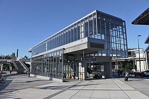

University of Washington .
University of Washington station is located at the intersection of Montlake Boulevard Northeast and Northeast Pacific Street in the University District of northern Seattle.[2] The station is situated in the parking lot of Husky Stadium, immediately east of the University of Washington Medical Center. To the northwest is the University of Washington campus, which is accessible via the Rainier Vista bridge, the Burke-Gilman Trail, and Northeast Pacific Street.[3][4]The surrounding area accommodates 15,511 jobs, constituting one of the Seattle region's major employment centers, as well as 488 residents in Montlake to the south.[5] The station is connected to the Montlake neighborhood by the Montlake Bridge, which carries Montlake Boulevard towards a junction with State Route 520, a major east–west freeway connecting Seattle to the Eastside suburbs.[6] The station is one mile (1.6 km) south of the University Village shopping center and two miles (3.2 km) southwest of Seattle Children's Hospital.[3][7] The University of Washington has long-term plans to redevelop its parking lots along Montlake Boulevard into additional office and classroom space, forming the new "East Campus" area.[8][9]